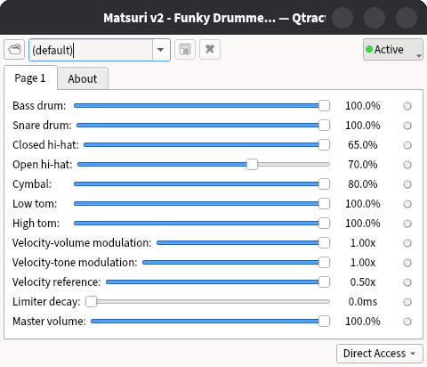

Thank you for downloading Matsuri, a synthesizer recreating the sound of Roland's TR-606 drum machine. Fast, tiny, and faithful to the original sounds (considering it doesn't emulate circuitry). This document will guide you on how to install it, use it, and if you feel lucky, compile it from its source code.
Matsuri has no relation with Roland, all trademarks and copyrights are theirs.
Company names and product names appearing in this document are registered trademarks or trademarks of their respective owners.
Check that your DAW supports CLAP plug-ins, and where it expects them to be installed. At the time of writing, a common location is ~/.clap/ (yes, with a dot).
In the ZIP file you will find matsuri-v2-fedora.clap and matsuri-v2-ubuntu.clap, these files were compiled in Fedora 44 and Ubuntu 24.04 LTS respectively, choose one according to your distro. Are you using something different? Chances are that either of them will do the job.
Copy the file into the folder your DAW expects it to be. Restart the DAW, some may require you to explicitly indicate to "Scan" new plug-ins, read its documentation
And that's it! You should find Matsuri v2 as an instrument, and/or a drum machine.

There is no pretty graphical interface, your DAW is in charge of displaying parameters. You will find something like shown in Figure 1.
Aside from typical volume parameters, a limiter is provided, disabled when decay is set to zero (the default). "Velocity reference" specifies the velocity to converge to if "Velocity-tone modulation" approaches zero. With no "Velocity-volume modulation", volume converges to 100%.
The synthesizer will respond to notes B1 through C#3 (35-49 following General MIDI standard). All sounds can play simultaneously, however, each one is monophonic when retriggered. Exceptions are the open and closed hi-hat, which silence one another, and crash cymbal which is fully polyphonic.
Version 2.0 is the first to provide a CLAP plug-in, a WASM module, proper velocity, documentation, and attempting to be user-friendly. Version 1.0 was more of a hack than anything else.
You will need a C11 compiler, cmake, and git. On Ubuntu you can install these by typing in the terminal:
sudo apt install gcc cmake git
Then, download the code with its dependencies using git, and enter the folder using:
git clone --recurse-submodules https://github.com/baAlex/Matsuri
cd Matsuri
Once in the folder, it's usual cmake stuff:
mkdir build
cd build
cmake .. -DCMAKE_BUILD_TYPE=Release
cmake --build .
You can find more information at www.github.com/baAlex/Matsuri. You can also submit issues/bugs you found, make suggestions, and get access to the source code.
Matsuri is free and open source, under Common Development and Distribution License 1.0.
If a copy of the CDDL was not distributed with this file (license.txt), you can obtain one at www.opensource.org/license/CDDL-1.0.
Samples and audio created from code/programs, under no license, those are yours.